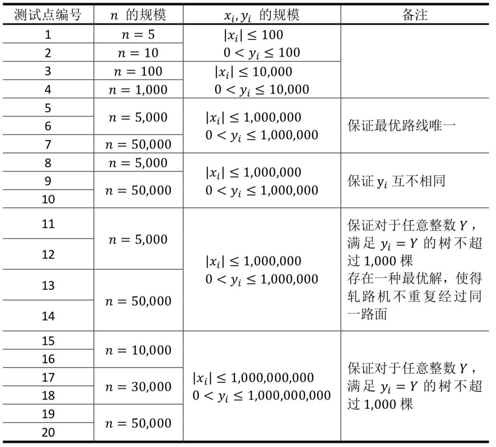

Comet OJ
Comet OJ第 $1$ 行包含 $1$ 个正整数 $n$，表示许愿树的数量。
接下来 $n$ 行，第 $i+1$ 行包含 $2$ 个整数 $x_i,y_i$，中间用单个空格隔开，表示第 $i$ 棵许愿树的坐标。
小园丁 Mr.S 负责看管一片田野，田野可以看作一个二维平面。田野上有 $n$ 棵许愿树，编号 $1,2,3,\cdots, n$，每棵树可以看作平面上的一个点，其中第 $i$ 棵树 $(1 ≤ i ≤ n)$ 位于坐标 $(x_i, y_i)$。任意两棵树的坐标均不相同。
老司机 Mr.P 从原点 $(0,0)$ 驾车出发，进行若干轮行动。每一轮，Mr.P 首先选择任意一个满足以下条件的方向：
完成选择后，Mr.P 沿该方向直线前进，必须到达该方向上距离最近的尚未许愿的树，在树下许愿并继续下一轮行动。如果没有满足条件的方向可供选择，则停止行动。他会采取最优策略，在尽可能多的树下许愿。若最优策略不唯一，可以选择任意一种。
不幸的是，小园丁 Mr.S 发现由于田野土质松软，老司机 Mr.P 的小汽车在每轮行进过程中，都会在田野上留下一条车辙印，一条车辙印可看作以两棵树（或原点和一棵树）为端点的一条线段。
在 Mr.P 之后，还有很多许愿者计划驾车来田野许愿，这些许愿者都会像 Mr.P 一样任选一种最优策略行动。Mr. S 认为非左右方向（即上、左上 $45°$、右上 $45°$ 三个方向）的车辙印很不美观，为了维护田野的形象，他打算租用一些轧路机，在这群许愿者到来之前夯实所有“可能留下非左右方向车辙印”的地面。“可能留下非左右方向车辙印”的地面应当是田野上的若干条线段，其中每条线段都包含在某一种最优策略的行进路线中。每台轧路机都采取满足以下三个条件的工作模式：
从原点或任意一棵树出发。
只能向上、左上 $45°$、右上 $45°$ 三个方向之一移动，并且只能在树下改变方向或停止。
只能经过“可能留下非左右方向车辙印”的地面，但是同一块地面可以被多台轧路机经过。
现在 Mr.P 和 Mr.S 分别向你提出了一个问题：
请给 Mr.P 指出任意一条最优路线。
请告诉 Mr.S 最少需要租用多少台轧路机。
第 $1$ 行包含 $1$ 个正整数 $n$，表示许愿树的数量。
接下来 $n$ 行，第 $i+1$ 行包含 $2$ 个整数 $x_i,y_i$，中间用单个空格隔开，表示第 $i$ 棵许愿树的坐标。
第 $1$ 行输出 $1$ 个整数 $m$，表示 Mr.P 最多能在多少棵树下许愿。
第 $2$ 行输出 $m$ 个整数，相邻整数之间用单个空格隔开，表示 Mr.P 应该依次在哪些树下许愿。
第 $3$ 行输出 $1$ 个整数，表示 Mr.S 最少需要租用多少台轧路机。
6
-1 1
1 1
-2 2
0 8
0 9
0 103
2 1 3
34
0 1
-2 1
2 1
3 24
1 2 3 4
2【样例说明 $1$】
最优路线 $2$ 条可许愿 $3$ 次：$(0,0)$ → $(1,1)$ → $(−1,1)$ → $(−2,2)$ 或 $(0,0)$ → $(0,8)$ → $(0,9)$ → $(0,10)$。
至少 $3$ 台轧路机，路线是 $(0,0)$ → $(1,1)$，$(−1,1)$ → $(−2,2)$ 和 $(0,0)$ → $(0,8)$ → $(0,9)$ → $(0,10)$。
【样例说明 $2$】
最优路线唯一：$(0,0)$ → $(0,1)$ → $(−2,1)$ → $(2,1)$ → $(3,2)$，可许愿 $4$ 次。其中在 $(0,1)$ 许愿后，从 $(−2,1)$ 出发沿着向右的方向能够到达的最近的未许愿过的树是 $(2,1)$，所以可以到达 $(2,1)$。
而如果沿着 $(0,0)$ → $(0,1)$ → $(2,1)$ → $(−2,1)$ 的方向前进，此时 $(−2,1)$ 右边所有树都是许愿过的，根据题目条件规定，停止前进。故无法获得最优解。
$(0,0)$ → $(0,1)$ 与 $(2,1)$ → $(3,2)$ 会留下非左右方向车辙印，需 $2$ 台轧路机。
【数据规模与约定】
所有测试数据的范围和特点如下表所示

【评分方式】
对于每个测试点：
若输出的第 $1$ 行正确，得到该测试点 $20\%$ 的分数；若输出的前两行正确，得到该测试点 $40\%$ 的分数；若输出完全正确，得到该测试点 $100\%$ 的分数。